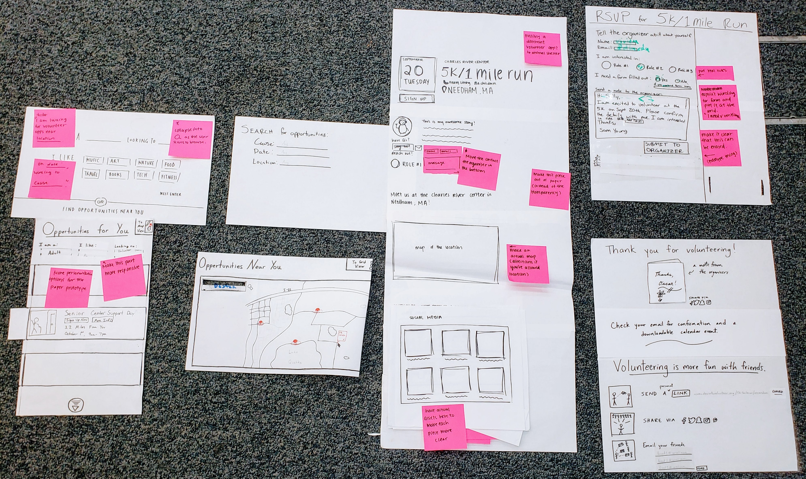

Design Development
Ideating, Listening, & Iterating

Starting the phase we had a solid basis of information about our users. We used that information to create paper prototypes to suss out any flaws, misread needs, or omissions in our understanding before moving on to digital prototyping in the next phase.
The first draft of this paper prototype, incorportating what we learned from our users in the needs analysis phase, is shown below. Then we went on to run tests with users, gather more context-specific feedback, and let that inform new changes.
Home + Browse Pages
Version 1
Changes Made
User Flow: One of the big decisions we made was how directly we wanted to bring users to the volunteering sign up page. We broke this up into two options, each of which targets a different user.
1. Browse to Information to Signup
2. Browse to Signup (shortcutting the additional information
The additional information approach required in the signup workflow is targeted toward new volunteers who are interested in “window shopping” and learning about different opportunities and signing up. The other approach is for the experienced user, someone who comes to the site with an already existing mission in mind and may feel inconvenienced by additional clicks. We tested both of these flows on users to ensure they were functional and intuitive.
Grid and map layouts tossed: Single strips won out because grid view (not shown) was deemed too cluttered, especially with the 4 pieces of information and a picture we were putting into each one. With limited options as is, we don’t want users skimming pages and missing something just because they were too cluttered.
At the start of this phase, we thought an option for browsing by map view would meet user needs to minimize travel (shown to the right). However, in user testing this proved to be confusing and unable to convey the information clearly. Ultimately we removed it and went fully with strip listings, with visual location information (i.e. map) moved to the event pages themselves.
Version 2
Event Info Page
Version 1
Changes Made
Additional Info: We added a section at the bottom of the page consisting of three tabs that users can switch between - photos from social media, more events from the same volunteer organizers, and more events similar to the one they are viewing - in order to increase visual appeal and encourage them to continue browsing if they decide this event isn’t for them.
Version 2
RSVP + Thank You Pages
Version 1
Changes Made
Version 2
Throughout these user tests, we were alerted to several other minor problems with our design, mostly confusing terminology and unclear UI, which we changed for the second draft. However it was positive to hear that the underlying structure of the site made sense to the users.
After following up with this we made small changes to make the workflow of the prototype easier to understand, giving us our second draft.